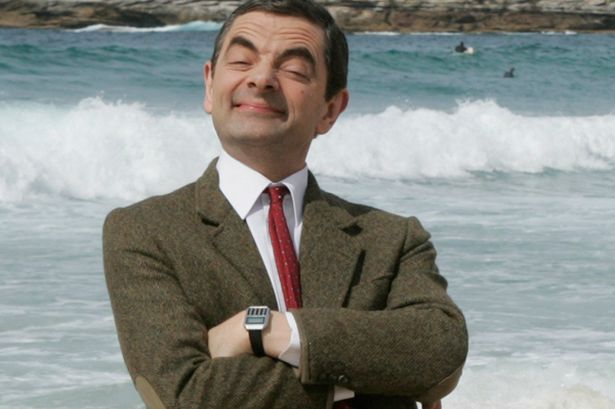

My name is Andrei Niculae Petre. I am a (mostly computer) science enthusiast, I like learning new things, meeting new people and finding out new experiences. My blog will have mostly technical content, that I get enthusiastic about when I find them out myself. I also very much like doing sports, especially swimming, hiking, and playing chess (yeah, it's a sport you know).
Email me at: p31 andrei #at# gmail #dot# com
Find more on ...
